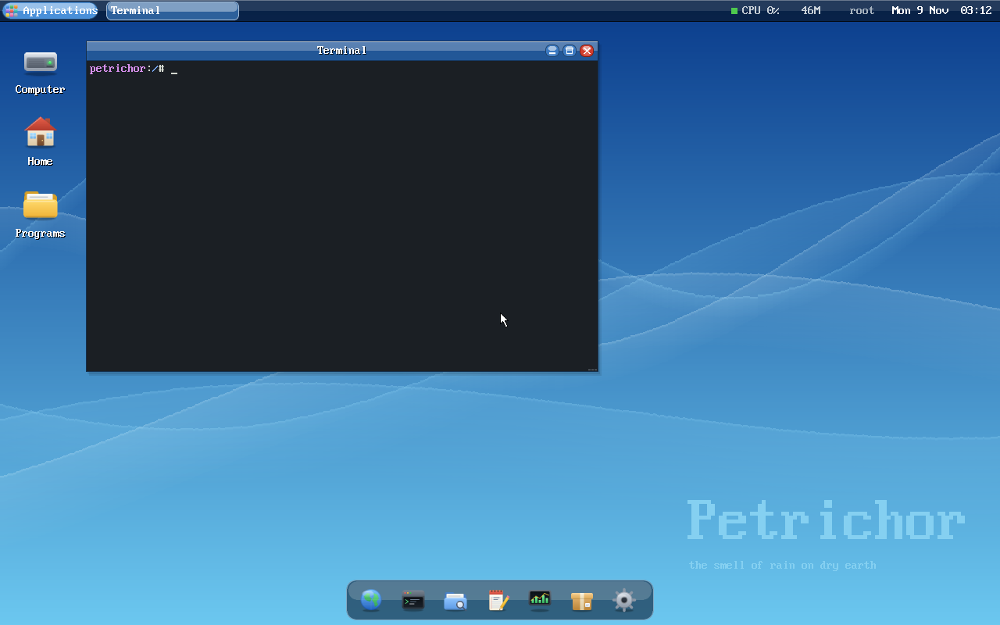
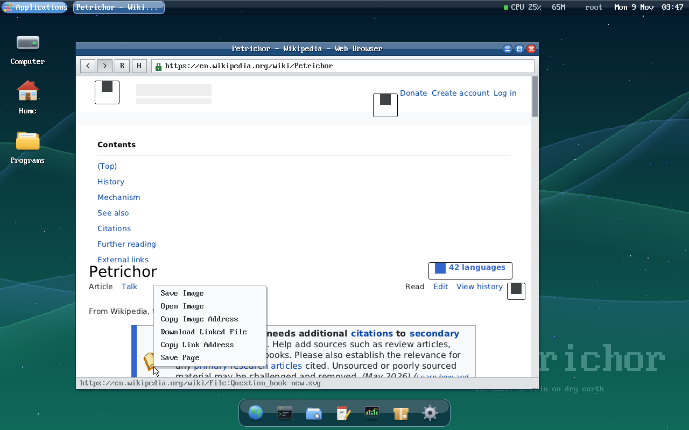
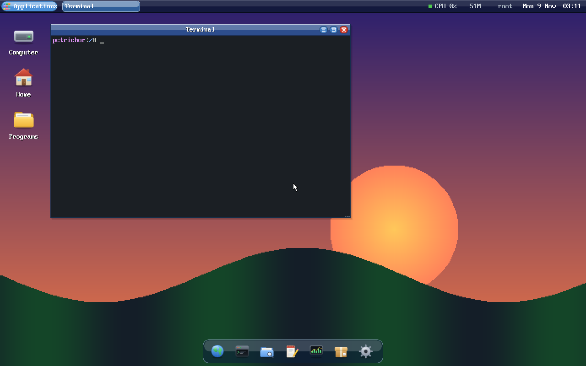

the smell of rain on dry earth
A Unix-like operating system for x86_64, written from scratch: its own kernel, filesystem, drivers, desktop, web browser and package manager.

64-bit, preemptive multitasking, virtual memory with mmap, threads and futexes, shared memory and pipes.
IDE, AHCI, NVMe and virtio disks; Realtek, Intel and virtio network cards; USB keyboard, mouse and tablet; ACPI power.
BIOS and UEFI, from a disk, CD or USB stick, with an installer on the live ISO.
A glassy windowed desktop with a dock, animations, custom wallpapers, a terminal, files, editor, image viewer and settings.
TCP/IP with DHCP and DNS, plus HTTPS with certificate checking, built into the system.
HTML5 and CSS via NetSurf's libraries, TrueType fonts, images, JavaScript and downloads. Installed as a package.
ppm installs and upgrades software from the package repository.
Write programs in C or C++ with a small libc, pthreads and a graphics library.


You need clang, ld.lld and qemu-system-x86_64.
git clone https://github.com/PetrichorFoundation/PetrichorOS
cd PetrichorOS
make # builds the kernel, disk image and ISO
make run # boots it in QEMUThen install the browser from inside Petrichor:
ppm update
ppm install browserbuild/petrichor.iso boots on real hardware too: write it to a USB stick, or burn it to a CD.